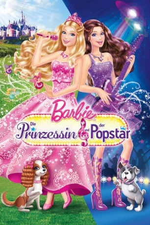

#673 Barbie 23 Die Prinzessin und der Popstar
Alternativ: Barbie: The Princess & the Popstar
 
 IMDB-Wertung: 5.7 / 10
IMDB-Wertung: 5.7 / 10  Metascore: 0
Metascore: 0 
Barbie™ glänzt in diesem märchenhaften Musical als Tori™, die warmherzige Prinzessin von Meribella. Statt ihre königlichen Aufgaben zu erfüllen, möchte sie viel lieber singen und tanzen. Als ihr Lieblings-Popstar Keira™ sie im Schloss besucht, werden die beiden sofort Freundinnen und entdecken ein magisches Geheimnis, das sie wie Zwillinge aussehen lässt. Mit etwas Magie tauschen Tori™ und Keira™ die Plätze und erleben spannende Abenteuer. Doch plötzlich droht Gefahr: der Schutzzauber, der das Königreich umgibt, soll gestohlen werden. Kann wahre Freundschaft das verhindern?
Jahr: 2012
Dauer: 86 Minuten
FSK:
Land: USA Studio: Universal Studios Home EntertainmentTonspuren:
Untertitel:
Auflösung: SD (720x416) Größe: 1116 MB
Genre: Animation/Trick, Familie, Musical
Regisseur: Ezekiel Norton
Drehbuch: Steve Granat, Cydne Clark
Soundtrack: Rebecca Kneubuhl, Gabriel Mann
Darsteller:
 Ashleigh Ball als Popstar Keira
Ashleigh Ball als Popstar Keira- Tiffany Giardina als Singing Popstar Keira , singing voice
 Peter Kelamis als Seymour Crider
Peter Kelamis als Seymour Crider Jonathan Holmes als Rupert / Palace Guard #1
Jonathan Holmes als Rupert / Palace Guard #1- Lauren Lavoie als Meredith
 Adrian Petriw als Prince Liam / Riff
Adrian Petriw als Prince Liam / Riff- Leala Selina als Vanessa
 Michael Dobson als Limburger / Palace Guard #2
Michael Dobson als Limburger / Palace Guard #2- Aislyn Watson als Charlotte
 Kelly Sheridan als Princess Tori
Kelly Sheridan als Princess Tori- Jennifer Waris als Singing Princess Tori , singing voice
- Ellie King als Duchess Amelia
- Allison Warnyca als Nora
- Christopher Gaze als King Frederic / Page
- Ashlyn Drummond als Trevi
- Ezekiel Norton als Daniel
- Lily Snowden-Fine als Emily
Datei: X:\Kinder Collections\Barbie\Barbie 23 Die Prinzessin und der Popstar (2012, FSK, 720x416).avi seit 12.03.2015
Festplatte: Kinder-Filme+Trick
 Es gibt insgesamt 40 Filme in der Gruppe 'Kinder Collections\Barbie'
Es gibt insgesamt 40 Filme in der Gruppe 'Kinder Collections\Barbie'